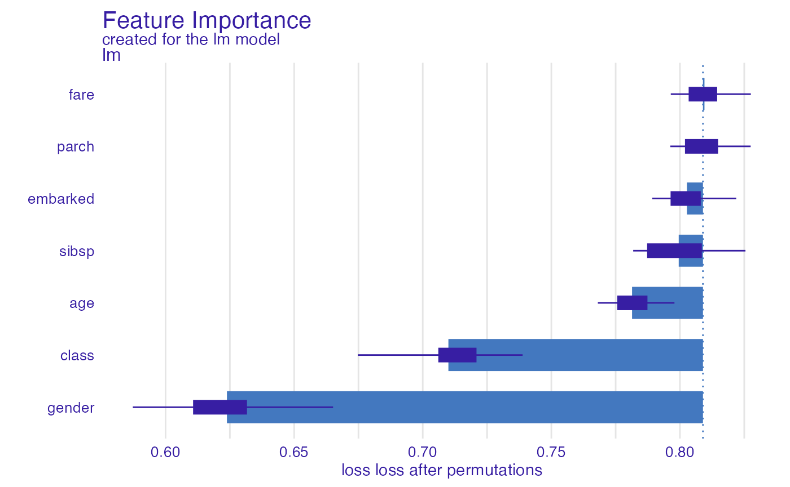
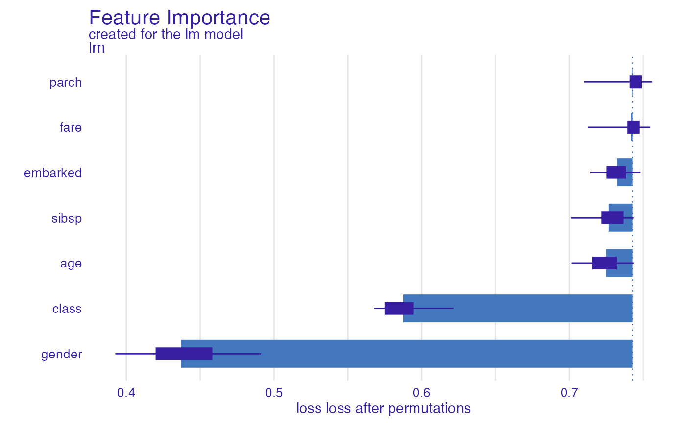
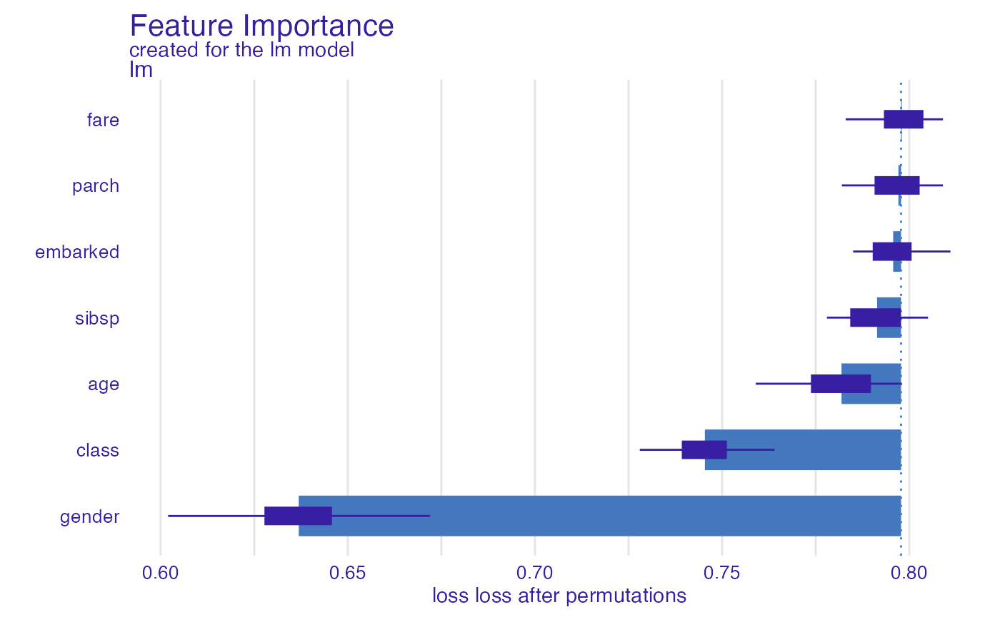
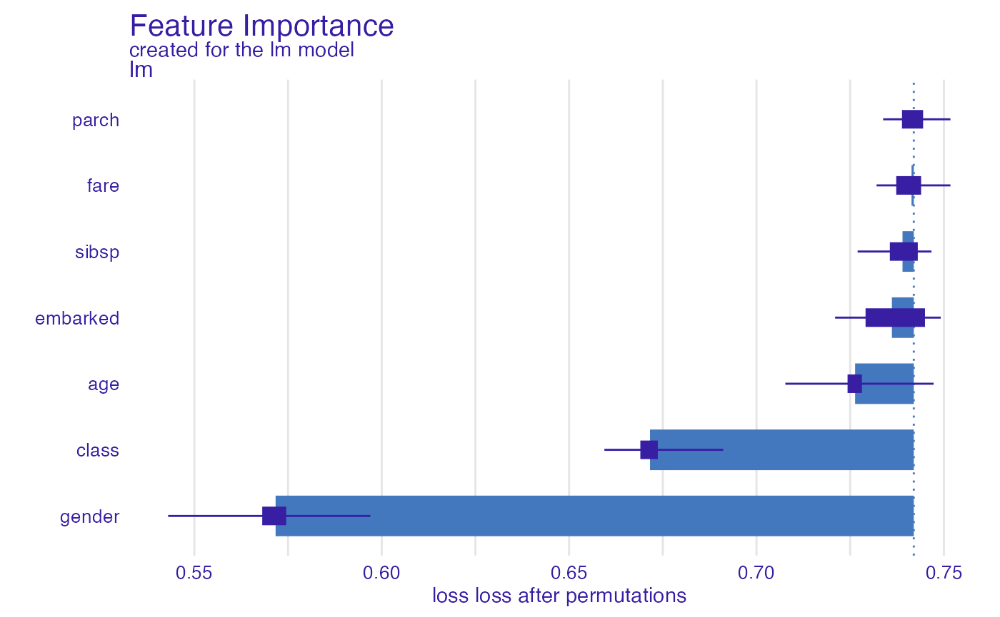
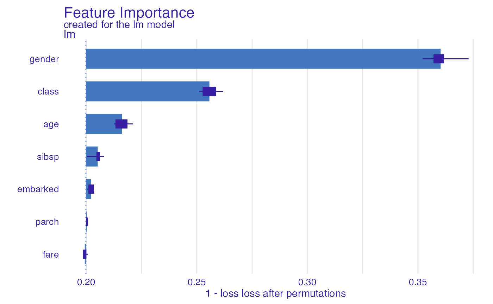
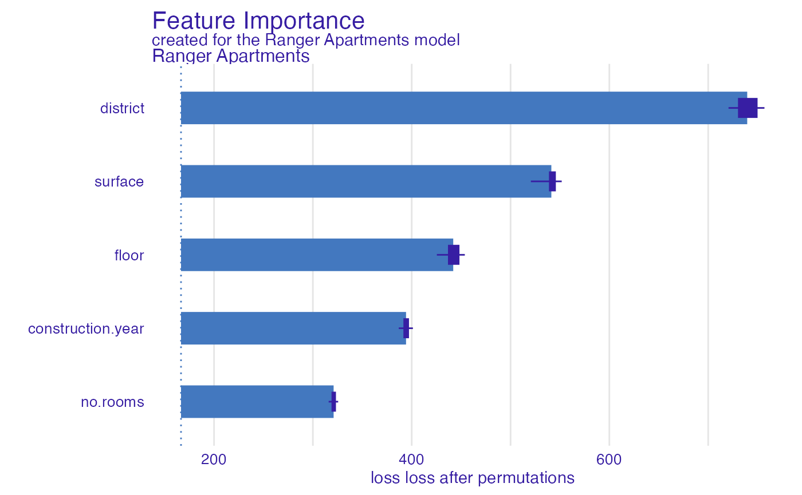
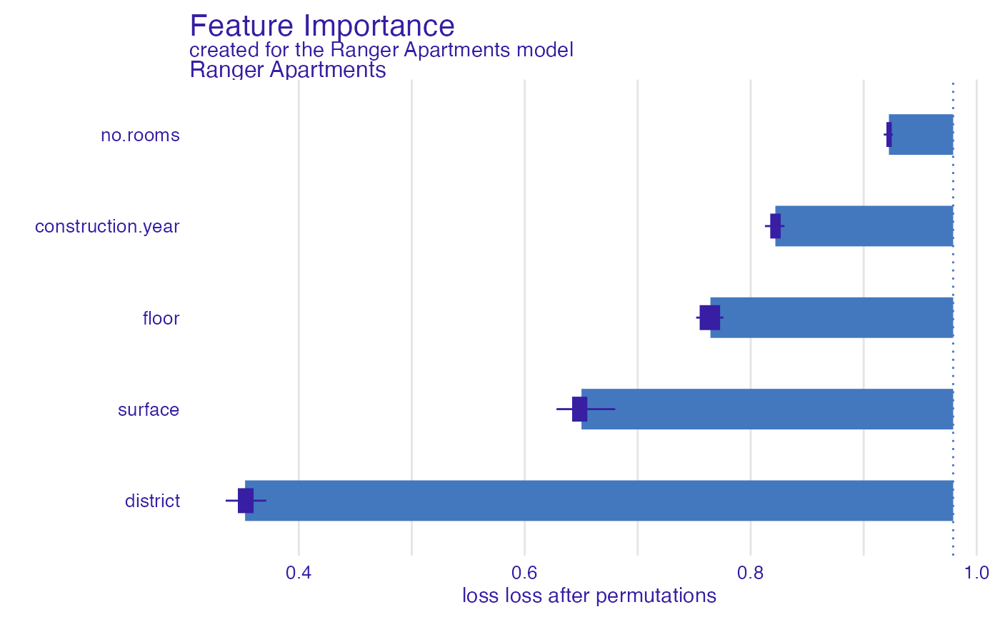

How to use DALEX with the yardstick package?
Przemyslaw Biecek
2022-05-21
Source:vignettes/vignette_yardstick.Rmd
vignette_yardstick.RmdIntro
yardstick is a package that offers many measures for evaluating model performance. It is based on the tidymodels/tidyverse philosophy, the performance is calculated by functions working on the data.frame with the results of the model.
DALEX uses model performance measures to assess the importance of variables (in the model_parts function). These are typically calculated based on loss functions (functions with prefix loss) that are working on two vectors - the score from the model and the true target variable.
Although these packages have a slightly different philosophy of operation, you can use the measures available in yardstick when working with DALEX. Below is information on how to use the loss_yardstick function to do this.
Prepare a classification model
The yardstick package supports both classification models and regression models. We will start our example with a classification model for the titanic data - the probability of surviving this disaster.
The following instruction trains a classification model.
library("DALEX")
library("yardstick")
titanic_glm <- glm(survived~., data = titanic_imputed, family = "binomial")Class Probability Metrics
The Class Probability Metrics in the yardstick package assume that the true value is a factor and the model returns a numerical score. So let’s prepare an explainer that has factor as y and the predict_function returns the probability of the target class (default behaviour).
NOTE: Performance measures will be calculated on data supplied in the explainer. Put here the test data!
explainer_glm <- DALEX::explain(titanic_glm,
data = titanic_imputed[,-8],
y = factor(titanic_imputed$survived))To make functions from the yardstick compatible with DALEX we must use the loss_yardstick adapter. In the example below we use the roc_auc function (area under the receiver operator curve). The yardstick:: prefix is not necessary, but we put it here to show explicitly where the functions you use are located.
NOTE: we set yardstick.event_first = FALSE as the model predicts probability of survived = 1.
options(yardstick.event_first = FALSE)
glm_auc <- model_parts(explainer_glm, type = "raw",
loss_function = loss_yardstick(yardstick::roc_auc))
glm_auc#> variable mean_dropout_loss label
#> 1 _full_model_ 0.8112957 lm
#> 2 gender 0.6350986 lm
#> 3 class 0.7156878 lm
#> 4 age 0.7812970 lm
#> 5 sibsp 0.8019703 lm
#> 6 embarked 0.8055721 lm
#> 7 fare 0.8112059 lm
#> 8 parch 0.8113836 lm
#> 9 _baseline_ 0.4970529 lm
plot(glm_auc)
In a similar way, we can use the pr_auc function (area under the precision recall curve).
glm_prauc <- model_parts(explainer_glm, type = "raw",
loss_function = loss_yardstick(yardstick::pr_auc))
glm_prauc#> variable mean_dropout_loss label
#> 1 _full_model_ 0.7453253 lm
#> 2 gender 0.4241547 lm
#> 3 class 0.5920422 lm
#> 4 age 0.7165849 lm
#> 5 sibsp 0.7258662 lm
#> 6 embarked 0.7336104 lm
#> 7 fare 0.7452077 lm
#> 8 parch 0.7453817 lm
#> 9 _baseline_ 0.3105478 lm
plot(glm_prauc)
Classification Metrics
The Classification Metrics in the yardstick package assume that the true value is a factor and the model returns a factor variable.
This is different behavior than for most explanations in DALEX, because when explaining predictions we typically operate on class membership probabilities. If we want to use Classification Metrics we need to provide a predict function that returns classes instead of probabilities.
So let’s prepare an explainer that has factor as y and the predict_function returns classes.
explainer_glm <- DALEX::explain(titanic_glm,
data = titanic_imputed[,-8],
y = factor(titanic_imputed$survived),
predict_function = function(m,x) {
factor(as.numeric(predict(m, x, type = "response") > 0.5),
levels = c("0", "1"))
})Again, let’s use the loss_yardstick adapter. In the example below we use the accuracy function.
glm_accuracy <- model_parts(explainer_glm, type = "raw",
loss_function = loss_yardstick(yardstick::accuracy))
glm_accuracy#> variable mean_dropout_loss label
#> 1 _full_model_ 0.8009 lm
#> 2 gender 0.6518 lm
#> 3 class 0.7395 lm
#> 4 age 0.7864 lm
#> 5 sibsp 0.7956 lm
#> 6 embarked 0.7996 lm
#> 7 parch 0.8006 lm
#> 8 fare 0.8011 lm
#> 9 _baseline_ 0.5963 lm
plot(glm_accuracy)
In a similar way, we can use the bal_accuracy function (balanced accuracy).
glm_bal_accuracy <- model_parts(explainer_glm, type = "raw",
loss_function = loss_yardstick(yardstick::bal_accuracy))
glm_bal_accuracy#> variable mean_dropout_loss label
#> 1 _full_model_ 0.7434741 lm
#> 2 gender 0.5585266 lm
#> 3 class 0.6777309 lm
#> 4 age 0.7286767 lm
#> 5 embarked 0.7369737 lm
#> 6 sibsp 0.7396725 lm
#> 7 fare 0.7429791 lm
#> 8 parch 0.7430213 lm
#> 9 _baseline_ 0.5018742 lm
plot(glm_bal_accuracy)
The lower the better?
For the loss function, the smaller the values the better the model. Therefore, the importance of variables is often calculated as loss(perturbed) - loss(original).
But many model performance functions have the opposite characteristic, the higher they are the better (e.g. AUC, accuracy, etc). To maintain a consistent analysis pipeline it is convenient to invert such functions, e.g. by converting to 1- AUC or 1 - accuracy.
To do it, just add the reverse = TRUE argument.
glm_1accuracy <- model_parts(explainer_glm,
loss_function = loss_yardstick(accuracy, reverse = TRUE))
glm_1accuracy#> variable mean_dropout_loss label
#> 1 _full_model_ 0.1963 lm
#> 2 fare 0.1959 lm
#> 3 parch 0.1967 lm
#> 4 embarked 0.1977 lm
#> 5 sibsp 0.2029 lm
#> 6 age 0.2130 lm
#> 7 class 0.2519 lm
#> 8 gender 0.3623 lm
#> 9 _baseline_ 0.4177 lm
plot(glm_1accuracy)
Calculate performance on whole dataset
By default the performance is calculated on N = 1000 randomly selected observations (to speed up the calculations). Set N = NULL to use the whole dataset.
glm_1accuracy <- model_parts(explainer_glm,
loss_function = loss_yardstick(accuracy, reverse = TRUE),
N = NULL)
plot(glm_1accuracy)
Prepare a regression model
The following instruction trains a regression model.
Regression Metrics
The Regression Metrics in the yardstick package assume that the true value is a numeric variable and the model returns a numeric score.
explainer_ranger <- DALEX::explain(apartments_ranger, data = apartments[,-1],
y = apartments$m2.price, label = "Ranger Apartments")#> Preparation of a new explainer is initiated
#> -> model label : Ranger Apartments
#> -> data : 1000 rows 5 cols
#> -> target variable : 1000 values
#> -> predict function : yhat.ranger will be used ( default )
#> -> predicted values : No value for predict function target column. ( default )
#> -> model_info : package ranger , ver. 0.13.1 , task regression ( default )
#> -> predicted values : numerical, min = 1881.619 , mean = 3488.811 , max = 6190.515
#> -> residual function : difference between y and yhat ( default )
#> -> residuals : numerical, min = -521.673 , mean = -1.79163 , max = 621.4577
#> A new explainer has been created!To make functions from the yardstick compatible with DALEX we must use the loss_yardstick adapter. In the example below we use the rmse function (root mean squared error).
ranger_rmse <- model_parts(explainer_ranger, type = "raw",
loss_function = loss_yardstick(rmse))
ranger_rmse#> variable mean_dropout_loss label
#> 1 _full_model_ 156.3499 Ranger Apartments
#> 2 no.rooms 276.5140 Ranger Apartments
#> 3 construction.year 390.1294 Ranger Apartments
#> 4 floor 433.1465 Ranger Apartments
#> 5 surface 565.5482 Ranger Apartments
#> 6 district 766.4657 Ranger Apartments
#> 7 _baseline_ 1205.1072 Ranger Apartments
plot(ranger_rmse)
And one more example for rsq function (R squared).
ranger_rsq <- model_parts(explainer_ranger, type = "raw",
loss_function = loss_yardstick(rsq))
ranger_rsq#> variable mean_dropout_loss label
#> 1 _full_model_ 0.981520361 Ranger Apartments
#> 2 district 0.333220715 Ranger Apartments
#> 3 surface 0.602216180 Ranger Apartments
#> 4 floor 0.769761085 Ranger Apartments
#> 5 construction.year 0.819190001 Ranger Apartments
#> 6 no.rooms 0.947619284 Ranger Apartments
#> 7 _baseline_ 0.001129855 Ranger Apartments
plot(ranger_rsq)
Summary
I hope that using the yardstick package at DALEX will now be easy and enjoyable. If you would like to share your experience with this package, please create an issue at https://github.com/ModelOriented/DALEX/issues.
Session info
#> R version 4.2.0 (2022-04-22)
#> Platform: x86_64-apple-darwin17.0 (64-bit)
#> Running under: macOS Big Sur/Monterey 10.16
#>
#> Matrix products: default
#> BLAS: /Library/Frameworks/R.framework/Versions/4.2/Resources/lib/libRblas.0.dylib
#> LAPACK: /Library/Frameworks/R.framework/Versions/4.2/Resources/lib/libRlapack.dylib
#>
#> locale:
#> [1] en_US.UTF-8/en_US.UTF-8/en_US.UTF-8/C/en_US.UTF-8/en_US.UTF-8
#>
#> attached base packages:
#> [1] stats graphics grDevices utils datasets methods base
#>
#> other attached packages:
#> [1] ranger_0.13.1 yardstick_0.0.9 DALEX_2.4.2
#>
#> loaded via a namespace (and not attached):
#> [1] tidyselect_1.1.2 xfun_0.31 bslib_0.3.1 purrr_0.3.4
#> [5] lattice_0.20-45 colorspace_2.0-3 vctrs_0.4.1 generics_0.1.2
#> [9] htmltools_0.5.2 yaml_2.3.5 utf8_1.2.2 rlang_1.0.2
#> [13] pkgdown_2.0.3 jquerylib_0.1.4 pillar_1.7.0 glue_1.6.2
#> [17] lifecycle_1.0.1 plyr_1.8.7 stringr_1.4.0 munsell_0.5.0
#> [21] gtable_0.3.0 ragg_1.2.2 memoise_2.0.1 evaluate_0.15
#> [25] labeling_0.4.2 knitr_1.39 fastmap_1.1.0 fansi_1.0.3
#> [29] highr_0.9 Rcpp_1.0.8.3 scales_1.2.0 cachem_1.0.6
#> [33] desc_1.4.1 jsonlite_1.8.0 ingredients_2.2.0 farver_2.1.0
#> [37] systemfonts_1.0.4 fs_1.5.2 textshaping_0.3.6 ggplot2_3.3.6
#> [41] digest_0.6.29 stringi_1.7.6 dplyr_1.0.9 grid_4.2.0
#> [45] rprojroot_2.0.3 cli_3.3.0 tools_4.2.0 magrittr_2.0.3
#> [49] sass_0.4.1 tibble_3.1.7 crayon_1.5.1 pkgconfig_2.0.3
#> [53] Matrix_1.4-1 ellipsis_0.3.2 pROC_1.18.0 rmarkdown_2.14
#> [57] R6_2.5.1 compiler_4.2.0